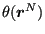
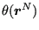
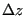
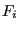

Next: Adaptive Free-Energy Methods Up: Free Energy Methods Previous: The Method of Overlapping
To further generalize our discussion of free-energy methods, it is convenient to introduce the concept of the “order parameter”  which is computed by a mapping function
, which is generally just any function of configuration (for example,
). For a system obeying the potential
, we can define the order parameter probability density as
which is computed by a mapping function
, which is generally just any function of configuration (for example,
). For a system obeying the potential
, we can define the order parameter probability density as
| (339) |
| (340) |
| (343) |
| (344) |
Let's now consider that we compute by histogramming into bins of constant width . Let's call the histogram and the total number of hits in the histogram . Then one way to write the relation between the approximate probability density and the histogram is
| (345) |
Now we imagine we can use several different 's together, each of which focus sampling on a particular region of order-parameter space, and we propose that the unbiased probability density can be constructed by a superposition of the biased probabilities:
| (346) | ||
| (347) |
| (348) |
Via minimization of the squared fluctuations of (since it will fluctuate in a simulation), one can arrive at an expression for (math not shown):
| (349) |
| (350) |
This gives a reweighted histogram of
| (351) |
Now, let's define  via
| (352) | ||
| (353) | ||
| (354) | ||
![$\displaystyle = \int dz e^{-\beta W_i(z)}\frac{\displaystyle \int {\boldsymbol r}^N e^{-\beta\mathscr{U}_0}\delta\left[z-\theta({\boldsymbol r}^N)\right]}{Z_0}$](img923.png) |
(355) | |
| (356) | ||
| (357) |
This allows us to write the unbiased histogram as
Eq. 356 and 357 are called (by some) the WHAM equations (for Weighted Histogram Analysis Method [45]). They can be solved iteratively to yield an unbiased probability provided with a set of biased histograms obtained from running MC simulations on . The standard WHAM approach is
As an example, consider a single degree of freedom  (our “particle”) moving under Brownian dynamics (BD) on a quartic two-well potential:
(our “particle”) moving under Brownian dynamics (BD) on a quartic two-well potential:
| where | (360) |
| (361) |
Fig. 42 shows the calculation of using this approach, with BD on  using the code
using the code bd-w.c. We show that sampling with a reduced temperature of 10 requires about 2 billion BD timesteps to reproduce  . If we reduce the temperature to 1, the large barrier between the two wells is not surmounted and
. If we reduce the temperature to 1, the large barrier between the two wells is not surmounted and  is therefore not correctly reproduced.
is therefore not correctly reproduced.
|
|
Fig. 43 shows that  can be reproduced at
can be reproduced at  of 1.0 using WHAM using 21 windows and harmonic bias potentials spaced uniformly along
of 1.0 using WHAM using 21 windows and harmonic bias potentials spaced uniformly along  , each with a
, each with a  of 20. That is, each bias potential is of the form
of 20. That is, each bias potential is of the form
| (362) |
Here, only two million BD steps were run per window, for a total of 42 million steps. This means this WHAM dataset required more than twenty times less BD sampling at a temperature of 1.0 than the brute force sampling approach could at a temperature of 10.0.
 |
As a second example of WHAM, consider MD simulation of butane molecule in vacuum at  = 310 K. One order parameter we may consider here is the C
= 310 K. One order parameter we may consider here is the C -C distance. When the molecule is in trans, the C
-C distance. When the molecule is in trans, the C -C distance is about 4.5 Å, while when it is in gauche, the C
-C distance is about 4.5 Å, while when it is in gauche, the C -C distance is about 3.2 Å. We expect there to be a small free-enegy barrier between these two states when characterized using the C
-C distance is about 3.2 Å. We expect there to be a small free-enegy barrier between these two states when characterized using the C -C distance. Fig. 44 shows results of both WHAM and long MD simulations, showing indeed that the trans and gauche states are separated by a small barrier of about 2 kcal/mol at 310 K, easily surmountable in MD. WHAM reconstruction of from 20 biased histograms generated from MD restrained using harmonic window potentials with spring constants of 100 kcal/mol-Å
-C distance. Fig. 44 shows results of both WHAM and long MD simulations, showing indeed that the trans and gauche states are separated by a small barrier of about 2 kcal/mol at 310 K, easily surmountable in MD. WHAM reconstruction of from 20 biased histograms generated from MD restrained using harmonic window potentials with spring constants of 100 kcal/mol-Å shows perfect agreement with the Boltzmann-inverted result.
shows perfect agreement with the Boltzmann-inverted result.
|
|
Butane is an almost trivially simple case; the C1-C4 distance is relatively easily sampled in standard MD at 310 K in few million time-steps. This is of course evident because we can generate a Boltzmann-inverted free energy directly from the histogram of this distance generated by MD. But it is important to note that the order parameter here, the C1-C4 distance, has a small amount of degeneracy: every value of this parameter except for its minimum and maximum has two major realizations determined by positive and negative senses of the dihedral angle. (There are of course some minor realizations due to angle stretching.) That means that each window's simulation should sample both the positive and negative regions of the order parameter space, and we must take care that the window potential is not so strong that these dihedral angle fluctuations cannot occur; if so, we would undersample the gauche states for sure. Fig. 45 shows traces of the C1-C4 distance for each window and corresponding traces of the dihedral angle; clearly for this value of  , each window is indeed able to sample both positive and negative values of the dihedral angle.
, each window is indeed able to sample both positive and negative values of the dihedral angle.
|
|
cfa22@drexel.edu
![$\displaystyle p_0(z)\Delta z = \frac{\displaystyle \sum_{i=1}^n H_i}{\displaystyle \sum_{j=1}^n \exp[-\beta (W_j(z)-F_j)]M_j}$](img927.png)